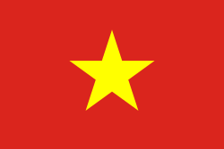
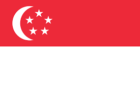
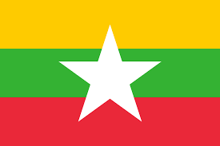

Nama : Taufiqur Rohman
NIM : 10121123
Kelas: IF-3
Indonesia

Indonesia, disebut juga dengan Negara Kesatuan Republik Indonesia; atau hanya Republik Indonesia adalah negara di Asia Tenggara yang dilintasi garis khatulistiwa dan berada di antara daratan benua Asia dan Oseania, serta antara Samudra Pasifik dan Samudra Hindia.
Bentuk negara Indonesia adalah negara kesatuan dan bentuk pemerintahan Indonesia adalah republik, dengan Dewan Perwakilan Rakyat, Dewan Perwakilan Daerah dan Presiden yang dipilih secara langsung.
Ibu kota negara Indonesia adalah Jakarta. Pemindahan ibu kota telah diusulkan oleh Pemerintah Indonesia sejak tahun 2019 dan pada 18 Januari 2022, pemerintah menetapkan Nusantara untuk menggantikan Jakarta sebagai ibu kota negara. Indonesia berbatasan darat dengan Malaysia di Pulau Kalimantan dan Pulau Sebatik, dengan Papua Nugini di Pulau Papua dan dengan Timor Leste di Pulau Timor. Negara tetangga lainnya yang berbatasan dengan laut adalah Singapura, Filipina, Australia, dan wilayah persatuan Kepulauan Andaman dan Nikobar di India.
Vietnam
Vietnam, bernama resmi Republik Sosialis Vietnam adalah negara paling timur di Semenanjung Indochina di Asia Tenggara. Vietnam berbatasan dengan Republik Rakyat Tiongkok di sebelah utara, Laos di sebelah barat laut, Kamboja di sebelah barat daya dan di sebelah timur terbentang Laut Tiongkok Selatan.
Dengan populasi sekitar 84 juta jiwa, Vietnam adalah negara terpadat ke-13 di dunia. Vietnam termasuk di dalam grup ekonomi "Next Eleven"; menurut pemerintah, GDP Vietnam tumbuh sebesar 8.17% pada tahun 2006, negara dengan pertumbuhan tercepat kedua di Asia Timur dan pertama di Asia Tenggara. Pada akhir tahun 2007, menteri keuangan menyatakan pertumbuhan GDP Vietnam diperkirakan mencapai rekor tertinggi dalam sepuluh tahun terakhir sebesar 8.44%.
Sejarah Vietnam dapat ditarik kembali ke 2500 tahun yang lalu, namun menurut legenda, bisa ditarik kembali ke 4000 tahun yang lalu. Vietnam, sejak abad 11 SM sampai abad 10 Masehi mayoritas berada di bawah kekuasaan kekaisaran Tiongkok. Tahun 939 M, Vietnam merdeka secara politis, dan mulai menggunakan Champa sebagai nama negara. Masa setelah ini dianggap sebagai masa pembangunan identitas kebangsaan Vietnam.
Thailand

Thailand, secara resmi Kerajaan Thailand yang dibaca Rātcha-āṇāchạk Thai, Rāja-ādnyācạkra Thai; atau, Thailand, atau Mueang Thai, adalah sebuah negara di Asia Tenggara yang berbatasan dengan Laos dan Kamboja di timur, Malaysia dan Teluk Siam di selatan, dan Myanmar dan Laut Andaman di barat.
Thailand adalah anggota pendiri Asosiasi Negara-Negara Asia Tenggara (ASEAN) dan tetap menjadi sekutu utama Amerika Serikat.[15][16] Meskipun ada perubahan kepemimpinan yang relatif sporadis, itu dianggap sebagai kekuatan regional di Asia Tenggara dan kekuatan menengah dalam urusan global.[17] Dengan tingkat perkembangan manusia yang tinggi, ekonomi terbesar kedua di Asia Tenggara, dan terbesar ke-20 oleh PDB, Thailand digolongkan sebagai ekonomi industri baru; manufaktur, pertanian, dan pariwisata adalah sektor-sektor utama perekonomian.[18][19]
Singapura
Singapura adalah sebuah negara pulau di lepas ujung selatan Semenanjung Malaya, 137 kilometer di utara khatulistiwa di Asia Tenggara. Negara ini terpisah dari Malaysia oleh Selat Johor di utara, dan dari Kepulauan Riau, Indonesia oleh Selat Singapura di selatan.
Singapura memiliki sejarah imigrasi yang panjang. Penduduknya yang beragam berjumlah kira-kira 6 juta jiwa, terdiri dari Orang Tionghoa, Melayu, India, Arab, berbagai keturunan Asia, dan Kaukasoid.[10] 42% penduduk Singapura adalah orang asing yang bekerja dan menuntut ilmu di sana. Pekerja asing membentuk 50% dari sektor jasa.[11][12] Negara ini adalah yang terpadat kedua di dunia setelah Monako.[13] A.T. Kearney menyebut Singapura sebagai negara paling terglobalisasi di dunia dalam Indeks Globalisasi tahun 2006.[14]
Sebelum merdeka tahun 1965, Singapura adalah pelabuhan dagang yang beragam dengan PDB per kapita $511, tertinggi ketiga di Asia Timur pada saat itu.[15] Setelah merdeka, investasi asing langsung dan usaha pemerintah untuk industrialisasi berdasarkan rencana bekas Deputi Perdana Menteri Dr. Goh Keng Swee membentuk ekonomi Singapura saat ini.[16]
Brunei

Brunei Darussalam atau Brunei[10][11][12][13] Tentang suara ini dengarkan (bantuan·info) /bruːˈnaɪ/, nama resmi: Negara Brunei Darussalam, (bahasa Melayu: Negara Brunei Darussalam, Jawi: نڬارا بروني دارالسلام), adalah negara berdaulat di Asia Tenggara yang terletak di pantai utara pulau Kalimantan. Negara ini memiliki wilayah seluas 5.765 km² yang menempati pulau Kalimantan dengan garis pantai seluruhnya menyentuh Laut Tiongkok Selatan. Wilayahnya dipisahkan ke dalam dua negara bagian di Malaysia yaitu Sarawak dan Sabah. Saat ini, Brunei Darussalam memiliki Indeks Pembangunan Manusia tertinggi kedua di Asia Tenggara setelah Singapura, sehingga diklasifikasikan sebagai Negara berkembang.[14] Menurut Dana Moneter Internasional, Brunei memiliki produk domestik bruto per kapita terbesar kelima di dunia dalam keseimbangan kemampuan berbelanja. Sementara itu, Forbes menempatkan Brunei sebagai negara terkaya kelima dari 182 negara karena memiliki ladang minyak bumi dan gas alam yang luas.[15] Selain itu, Brunei juga terkenal dengan kemakmurannya dan ketegasan dalam melaksanakan syariat Islam, baik dalam bidang pemerintahan maupun kehidupan bermasyarakat. Pada tahun 2020, tercatat bahwa Brunei memiliki penduduk sebanyak 460,345 jiwa.[16]
Myanmar
Republik Persatuan Myanmar (bahasa Myanmar: ပြည်ထောင်စု သမ္မတ မြန်မာနိုင်ငံတော်, MLCTS: pranyhtau:ngcu. sammata. mranmanuingngamtau) (pengucapan bahasa Burma: [pjìdàʊɴzṵ θàɴməda̰ mjàɴmà nàɪɴŋàɴdɔ̀]) (juga dikenal sebagai Birma, disebut "Burma" di dunia Barat) adalah sebuah negara berdaulat di Asia Tenggara. Myanmar berbatasan dengan India dan Bangladesh di sebelah barat, Thailand dan Laos di sebelah timur dan Tiongkok di sebelah utara dan timur laut. Negara seluas 676.578 km² ini telah diperintah oleh pemerintahan militer sejak kudeta tahun 1988. Negara ini adalah negara berkembang dan memiliki populasi lebih dari 51 juta jiwa (sensus 2014).[9] Ibu kota negara ini sebelumnya terletak di Yangon sebelum dipindahkan oleh pemerintahan junta militer ke Naypyidaw pada tanggal 7 November 2005.[10] Myanmar telah bergabung sebagai anggota Perhimpunan Bangsa-Bangsa Asia Tenggara (ASEAN) sejak tahun 1997.